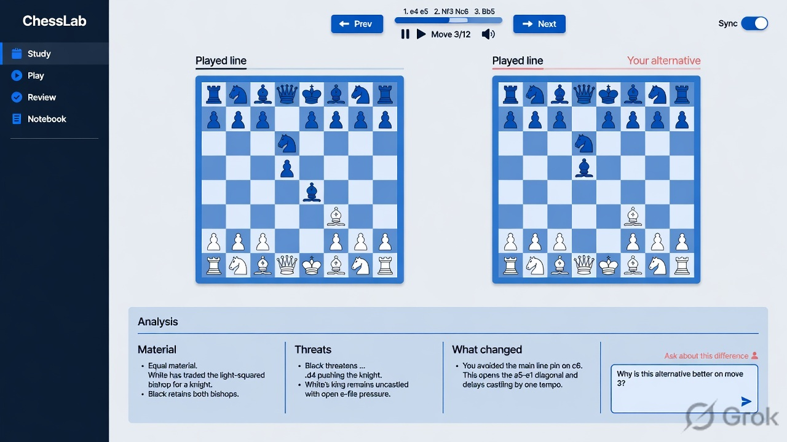

Explore · IMAGINE CONCEPT
Compare the consequences
A proposed part of the ChessLab learning experience.

What this screen must make possible
Two same-size study boards side by side labeled Played line and Your alternative. Synchronized move-step controls, a concise explanation difference panel underneath with Material, Threats and What changed. Ask about this difference composer. No made-up numerical engine verdicts. Clean analytical workspace.